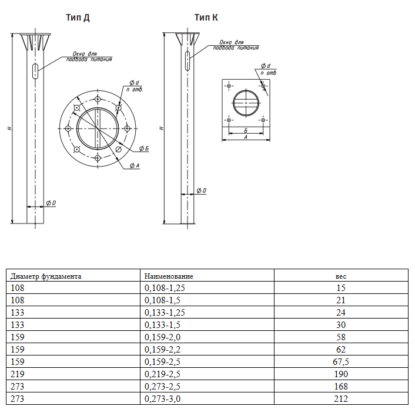

Закладные детали используются при строительстве фундаментов под установку фланцевых опор и мачт, предназначенных для освещения бульваров, микрорайонов, территорий коттеджных поселков и спортивных комплексов, в промышленных зонах и зонах перед торгово-развлекательными комплексами. Кроме того, закладные детали используются при строительстве оснований для молниеотводов и прочих высотных конструкций.
Данные изделия предназначаются для удержания опор освещения и других длинномерных конструкций (мачт, молниеотводов, флагштоков и т.д.) в вертикальном положении без внешних растяжек и распорок. Они вкапываются на глубину до пяти метров, после чего бетонируются. За счет этого опрокидывающие и сжиимающие нагрузки передаются на грунт.
Закладные детали производятся из стальных труб разных диаметров, начиная от 108мм и заканчивая 426мм. Части закладного элемента, конструктивно выступающие из фундаментного блока, защищены от коррозии в соответствии с требованиями СНиП 2.03.11 и ГОСТ 9.602.. Покрываются антикорозийной битумной мастикой толщиной слоя до 2,5мм. К верхней части фундамента приваривается толстый фланец округлой или квадратной формы, имеющий посередине отверстие, соответствующее внутреннему диаметру трубы.
С обратной стороны фланца размещают металлические подпорки в форме косынок. Они значительно упрочняют накладную площадку, не давая ей деформироваться в горизонтальной плоскости. На боковой поверхности металлической трубы вырезается сквозное отверстие овальной формы. Окошко предназначается для подвода к опоре освещения подземных электрических кабелей.
В зависимости от нагрузки существуют два вида фланца:
- квадратный с 4-мя отверстиями(тип К);
- круглый с количеством отверстий больше 4х(тип Д)
